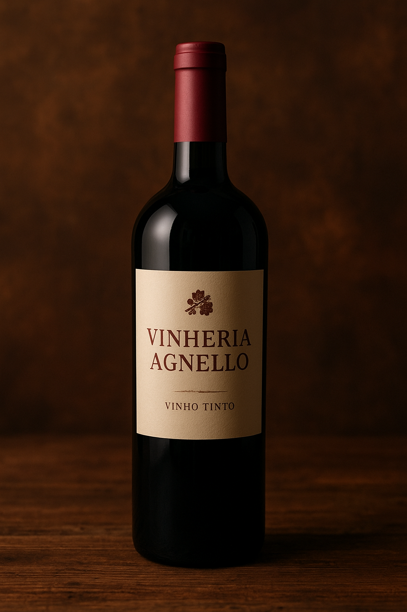

Bem-vindo à Vinharia Agnello 🍷
Somos especialistas em vinhos artesanais com tradição familiar.
🏠 Nossa História
Há mais de 15 anos, a Vinheria Agnello cultiva tradição e excelência no universo dos vinhos. Fundada por Giulio e sua filha Bianca, a empresa é reconhecida pelo atendimento personalizado e por transformar cada compra em uma verdadeira consultoria.
Mais que uma loja, somos um espaço de conhecimento e boas experiências, onde cada cliente é convidado a descobrir o vinho ideal para seu paladar e ocasião especial.
🍇 O Fascinante Mundo dos Vinhos
Com mais de 6 mil variedades de uvas espalhadas pelo mundo, o universo dos vinhos é vasto e encantador. Cada rótulo carrega consigo a influência do clima, do solo e da safra, oferecendo uma infinidade de sabores e aromas únicos.
Escolher um vinho pode ser um desafio — e também uma jornada deliciosa de descobertas e degustações. Aqui, você conta com a orientação de especialistas para encontrar o vinho perfeito para o seu gosto e ocasião.